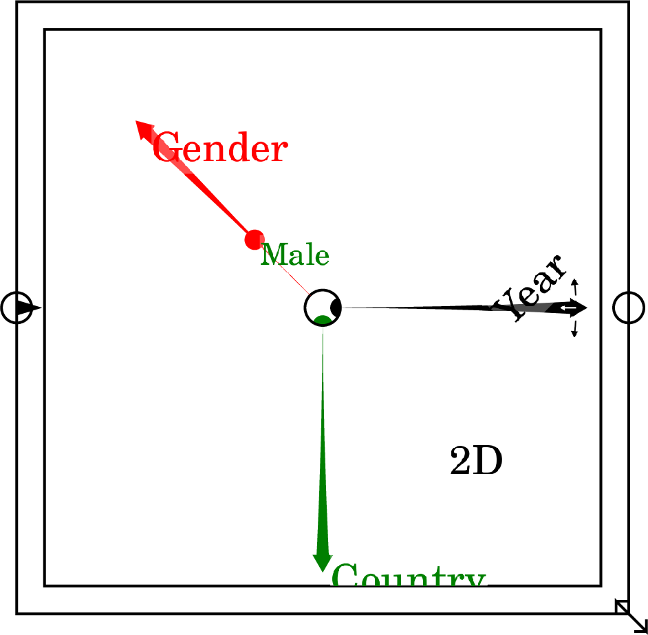

Next: Lock
Up: Operations
Previous: Import Data
Contents
A Ravel is a visual tool for manipulating and analyzing multi-dimensional
data. For full details on the concept see Ravel.
The Ravel operator
inserts a
Ravel onto the Wiring canvas. The first Ravel inserted is in Edit
mode, and has sample axis names and a sample data point selected.

Subsequent Ravels are inserted in iconized mode.
To use a Ravel, it must first have a parameter (or variable) attached
to it. Normally the parameter will contain data imported from a CSV
file--for more details see CSV import.
The key feature of a Ravel is its Axes (or ``Arrows''). A Ravel
has one axis per dimension of the data attached to it. Axes can be:
- Rotated
- The right-pointing axis determines what is shown on
the x-axis of a Plot and columns of a Sheet; the down-pointing axis
determines what is displayed on the Y-axis of a plot and the rows
of a sheet.
- Collapsed
- An axis is collapsed by dragging the arrow head
back to the centre of the Ravel. This applies an aggregation method
to the axis, which is determined by the setting for ``Set next aggregation''
on the context menu. The aggregations are Sum, Product, Average, Standard
Deviation, Maximum and Minimum. The aggregation type can be changed
post facto unser the ``Axis properties'' context menu.
- Selected
- When the selector dot for an Axis is in the centre
of the Ravel, the entire Ravel axis is output (though this can be a selection
of values on the axis if ``Pick axis slices'' has been activated).
When the selector dot is on a particular value on an axis, only that
value is output.
- Sorted
- The ``none'' sort order of a Ravel is that of
the axis as it is attached (usually the order in which it is read from
a CSV file). The axis can also be sorted in
either a ``forward'' or ``reverse'' direction. The sorting comparison
depends on the dimension type -- numerical in the case of ``value'',
time order in the case of ``time'' and lexicographic
(``alphabetical'') in the case of ``string''.
- Sorted by value
- When the output of a Ravel is 1-dimensional,
axes can be sorted by the data values along this 1-dimensional axis.
The choices are a combination of Forward and Reverse, and Statically
and Dynamically. A Static sort applies the order of the data for a
given instance--for example, countries could be sorted by the inflation
rate for 2022. This sort order is maintained if the selector dot for
date is altered. For example, with a static sort, choosing 2000 on
the Date axis would show the inflation rate in 2000, with countries
sorted according to their inflation rates in 2022. A Dynamic sort
applies the sort order for each selection. For example, a reverse
dynamic sort of Country by inflation rates would show countries by
descending order of their inflation rate in whichever year was chosen
on the Date axis.
- Picked
- The context menu option ``Pick axis slices'' invokes
a pop-down menu showing all the entries on that axis--countries
for a Country axis, dates for a Time axis, etc. You can select specific
values by clicking on them, and select multiple values by control-clicking
on them.
- Calipered
- ``Toggle axis calipers'' brings up a caliper which
initially spans the entire data range. The ends of the caliper can
be individually adjusted to select a range of the data, while the
whole caliper can be moved to select the same number of data points
for different segments of the data.
Ravels can be linked with other Ravels that share the same dimension(s).
This means that any operation applies to one Ravel is applied to all
Ravels in the linked set. For more details see Linking Ravels.
Next: Lock
Up: Operations
Previous: Import Data
Contents